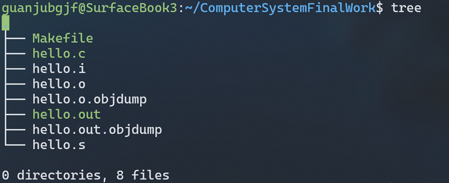

# 附件
# 文件结构
文件结构如下：

各个文件的说明如下：
| 文件 | 说明 |
|---|---|
| Makefile | 用于make操作 |
| hello.c | hello源代码 |
| hello.i | gcc -E预处理结果 |
| hello.o | gcc -c汇编结果 |
| hello.o.objdump | hello.o的反汇编结果 |
| hello.out | ld链接结果，可执行文件 |
| hello.out.objdump | hello.out的反汇编结果 |
| hello.s | gcc -S编译结果 |
# 文件内容
# Makefile
CC = gcc
CFLAGS = -m64 -no-pie -fno-PIC -Wall -Wextra -g -O0
run: hello.out
./$^ 1190200703 管健男 1
hello.i: hello.c
$(CC) $(CFLAGS) -E $^ -o $@
hello.s: hello.i
$(CC) $(CFLAGS) -S $^ -o $@
hello.o: hello.s
$(CC) $(CFLAGS) -c $^ -o $@
hello.o.objdump: hello.o
objdump -rd $^ > $@
hello.out: hello.o
ld -o $@ -dynamic-linker /lib64/ld-linux-x86-64.so.2 /usr/lib/x86_64-linux-gnu/c/usr/lib/x86_64-linu-gnu/crti.o hello.o /usr/lib/x86_64-linux-gnu/libc.so /usr/lib/x86_64-linux-gnu/
hello.out.objdump: hello.out
objdump -rd $^ > $@
clean:
rm *.i *.s *.o *.out *.objdump
# hello.c
// 大作业的 hello.c 程序
// gcc -m64 -Og -no-pie -fno-PIC hello.c -o hello
// 程序运行过程中可以按键盘，如不停乱按，包括回车，Ctrl-Z，Ctrl-C等。
// 可以 运行 ps jobs pstree fg 等命令
#include <stdio.h>
#include <unistd.h>
#include <stdlib.h>
int main(int argc,char *argv[]){
int i;
if(argc!=4){
printf("用法: Hello 学号 姓名 秒数！\n");
exit(1);
}
for(i=0;i<8;i++){
printf("Hello %s %s\n",argv[1],argv[2]);
sleep(atoi(argv[3]));
}
getchar();
return 0;
}
← 结论